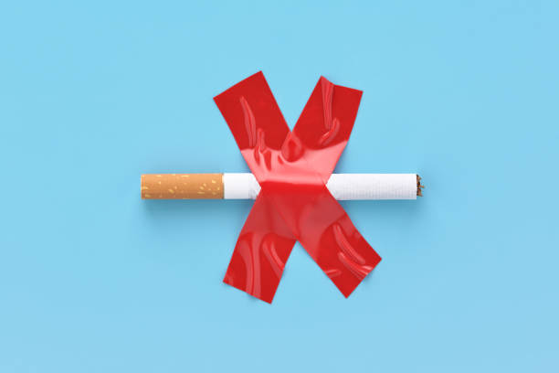

apa gunanya layanan berhenti merokok?
Untuk memberikan motivasi yang lebih kuat bagi seseorang yang ingin berhenti merokok, Berikut ini adalah manfaat bagi seseorang yang berhenti merokok, diantaranya adalah sebagai berikut:
-
Dalam 20 menit pertama, tekanan darah, denyut jantung dan aliran darah tepi pada seseorang akan membaik
-
Untuk 12 jam berikutnya, hampir semua nikotin dalam tubuh sudah dimetabolisme dan tingkat CO di dalam darah kembali normal.
-
Sampai 48 jam nikotin mulai tereliminasi dari tubuh. tidak hanya itu, Fungsi pengecap dan penciuman mulai membaik serta sistem kardiovaskular meningkat.
-
dalam 5 hari sejak berhenti merokok, sebagian besar metabolit nikotin dalam tubuh sudah hilang. Selain itu, fungsi pengecap dan pembau jauh menjadi lebih baik serta sistem kardiovaskular juga terus mengalami peningkatan yang baik.
-
Dalam 2 sampai dengan 6 minggu setelahnya, risiko infeksi pada luka setelah pembedahan berkurang secara bermakna. Fungsi silia saluran nafas dan fungsi paruh pun akan membaik, serta nafas pendek dan batuk-batuk akan berkurang.
-
Dalam 1 tahun setelah berhenti merokok, risiko penyakit jantung koroner menurun setengahnya dibandingkan orang yang tetap merokok.
-
Setelah 5 tahun berhenti merokok, risiko stroke menurun pada level yang sama seperti orang yang tidak pernah merokok.
-
Dalam 10 tahun berhenti merokok semua penyebab mortalitas dan risiko penyakit jantung koroner menurun pada level yang sama seperti orang yang tidak pernah merokok.
Dengan memahami poin-poin diatas, diharapkan masyarakat menjadi lebih termotivasi dan berani untuk berhenti merokok.
|
|

|
berikut artikel yang dapat anda baca untuk menguatkan ketugahan hati anda untuk berhenti merokok
|